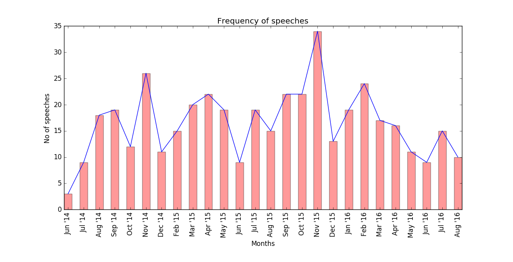
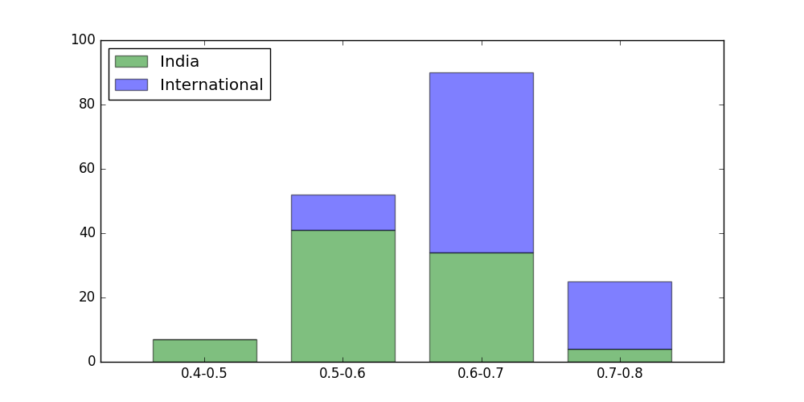

by Mansi Gupta
The speeches by prominent leaders are often a reflection of the current Government's vision, plans and progress. This work is about analyzing the speeches of incumbent Prime Minister of India, Mr Narendra Modi. Although, Mr. Modi's speeches are individually analyzed by media houses and political pundits, an aggregated overview is also important. To answer questions like - how frequent are the speeches? How do the national and international issues addressed evolve over time? What are the factors that make a speech popular? To answer such questions, we need to mine statistical, structural as well as textual characteristics. This post is merely a start in the direction.
The Indian Prime Minister delivers a unique charm with his words. Never before in the history of India, a Prime Minister’s routine international visits garnered so much media scrutiny and public attention. PM Modi’s speech at joint session of US Congress on 8 June 2016 was the most trending topic on social media. Mr Modi understands his audience well and establishes a rapport with them by drawing parallels. He uses humor as an effective tool. In a speech in US, Mr Modi satired that more Americans “bend to yoga than throw a curveball”. As the political analyst, Mr. Pushpesh Pant, notes “A good political speech should have an emotional charge, it should have credibility and a subtle sense of humor woven into it”
It has been two years that Narendra Modi has held the Prime Minister’s office. Full text of around 470 of his speeches is provided on his official website - www.narendramodi.in. We use the date, country of speech and title for our analysis. As of September 2016, Mr Modi has made 52 foreign trips to 43 countries. He has delivered more than 150 speeches abroad.
Here is the breakdown of speeches across months -
The peaks and lows are not correlated with any one important event. For example, the peak in November 2015 is due to PM speaking at different summits, like G20, BRICS, ASEAN, COP21, speeches in Bihar preceeding the Bihar elections and speeches made during the visit to UK and South East Asia.
From Jan 2014 to September 2016
Almost all the peaks in the graph can be traced to some popular speech or visit to an international country. After all the three Independence Day speeches, the searches expecetdly see a spike. So is the case during three out of four US visits.
Values are calculated on a scale from 0 to 100, where 100 is the location with the most popularity as a fraction of total searches in that location, a value of 50 indicates a location which is half as popular, and a value of 0 indicates a location where the term was less than 1% as popular as the peak.
A higher value means a higher proportion of all queries, not a higher absolute query count. So a tiny country where 80% of the queries are for "bananas" will get twice the score of a giant country where only 40% of the queries are for "bananas".
Source - Google Trends
The highlighted countries are those where people search most for Narendra Modi's speeches. India would obviously be there. Also, the fact that countries like UK, USA, Canada and UAE made it into the list are no surprise. These are the countries where Modi has visited at least once and a huge population of Non-Residents Indians reside here. A country that is unexpected is a South American country, Bolivia. Imagine Bolivian people search for Narendra Modi's speeches even more than our neighbours. This is a mystery open to solve.
We analyze text of 175 of Mr Modi's speeches.The data includes speeches delivered on visits outside India, delivered during the occassions of state visits of foreign leaders in India, delivered when addressing key summits BRICS, G20, ASEAN etc, given while addressing business forums, scientists, etc in different events and conferences. When addressing general Indian populace, Mr Modi prefers to speak in hindi. Although, for some key speeches, like those on India's Independence Day and in a radio show called 'Mann Ki Baat', hindi to english translation is readily available by official sources. However, the key speeches delivered in the parliament, given during the election campaigns, given while addressing the Indian diaspora abroad, etc. could not be covered due to lack of promising translation available. Hence, many key policies that are stressed upon during these speeches, which are directly related to common Indian, are not covered in this analysis.
Apart from the obvious terms like ‘nation’, ‘country’, ‘people’, ‘government’, it can be clearly seen the emphasis given by Mr Modi on ‘development’, ‘economy', ‘investment', ‘global', ‘infrastructure', ‘business', ‘village', ‘health', ‘education', ‘energy', ‘security', ‘partnership', ‘technology’ and ‘growth’.
Note that the term-frequency graph on the right, approximately follows Zipf's Law
Lexical Diversity is a measure of diversity of content in a document. It is a number between 0 and 1, from least to maximum diversity. It is calculated by dividing number of unique significant terms in a article by all significant terms in an article.
Here, Lexical Diversity is aggregated over speeches given in India and abroad.
It can be noticed that percentage of International speeches increase as lexical diversity increases. This can be explained by the fact that PM Modi speaks mostly at a directed audience on a directed topic in India. For example, in a speech to the Science Congress in India, he mainly spoke about development of research in India. Internationally, he has to cover many important topics in his speeches. For instance, at the speech in US Congress PM Modi covered wide range of topics, from Democracy to Terrorism.
To look at what topics are covered in Modi's speech, we use a technique called "Latent Topic Dirichlet" or LDA over Modi's speeches. This technique helps as explore the obvious and latent topics across a corpus of documents.
On the left, the circles represent topics. The radius of the circle is representative of extent of the topic in the document set. On hovering over a topic, on the right side, the terms associated with those topics are displayed. On hovering over a particular term, the radius of topic-circles change to depict the most important topics related to the term.
Also, the distance between the topic-circles is indicative of the relatedness of the topics. In the model, the topics are represented as n-dimensional vector of terms. This n is of the order of vocabulary of the corpus. On the left, is the approximate visualization of topics in 2-dimension.
For example, the topic#1 is related to relationship with Asia Pacific nations. Topic#9 is clearly related to indian economy. Topic#14 is clearly related to ayurveda and medicine.